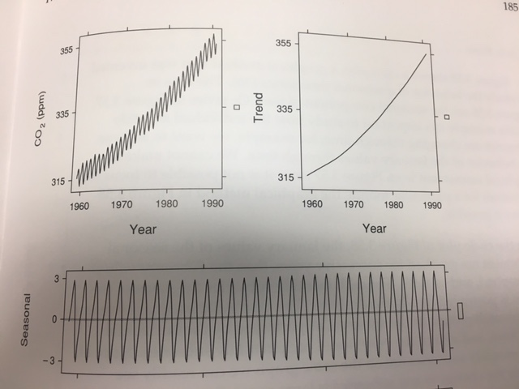
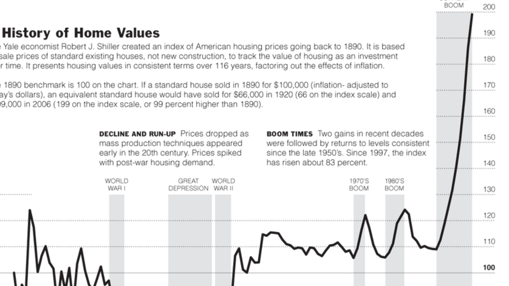
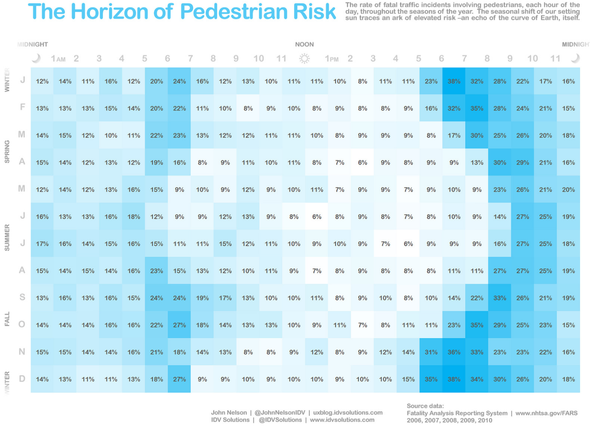

Time-Series Graphics
Some Important Tips on Time-Series Graphs
We use Line Charts for a Reason
Axis Length Matters
Don't Say More Than You Know

Don't Say More Than You Know

Don't Say More Than You Know
Be Careful of Incomplete Periods
Instead:
Consider slope charts when you just care about magnitude of change.
Tufte Intro to Slope Charts
Consider log scale for rate of change.
Consider log scale for rate of change.
log() and log10() functions in R
Remember you can de-season AND de-trend
Can you see a trend within months?
Enter the Cycle Plot
Friends don’t let friends use two y-axes.
--Matt Yglesias

Source: Kieran Healy
So instead of this:

Source: Stephen Few
Consider two different line charts:
Or scaling/rebasing:
Or a different graph type:
e.g. Direct ScatterplotNovel Approaches to Time-Series Visualizations
Time along the x-axis - Joseph Priestly (1769)

More recently...
NYT - A History of Home Values Not Just Lines/Bars Charts
Not Just Lines/Bars Charts
You have a lot of vertical space.
HistomapHistomap Revisited
XKCD's Congressional History
But charts can be pretty small.
Spark Lines
538's Take
Original Charles Minard Graph
{kind=link}
Original Nightingale
{kind=link}
Small multiples can work too
Horizon Graphs
Interactivity for Time
GIFs for Maps/Networks over Time